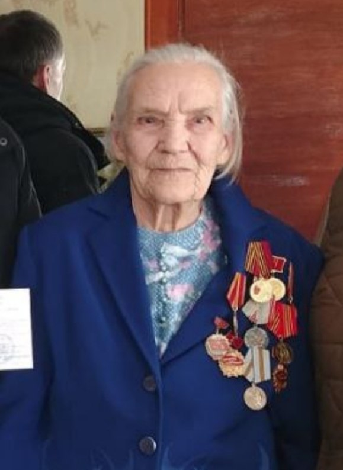

Родилась Анна Трофимовна - труженица тыла и ветеран труда - в 1931 году в деревне Хмелевка Покровского сельсовета и почти всю свою жизнь трудилась на родной боговаровской земле. Детство и юность Анны Трофимовны пришлись на нелегкие военные и послевоенные годы. Как и все ее ровесницы, пока на фронте Великой Отечественной войны шли кровопролитные бои, она трудилась в тылу на колхозных полях. После окончания 4-х классов в Даровской школе носила почту, ежедневно преодолевая 20-километровое расстоянии до Боговарова и обратно.Анна Трофимовна отработала 23 года в комбинате бытового обслуживания, из них 9 лет портнихой и 14 лет — закройщицей. У Анны Трофимовны большая и дружная семья — замечательные дочь и сын, четверо внуков и пятеро правнуков. Все они любят свою маму, бабушку, прабабушку и постоянно ее навещают.